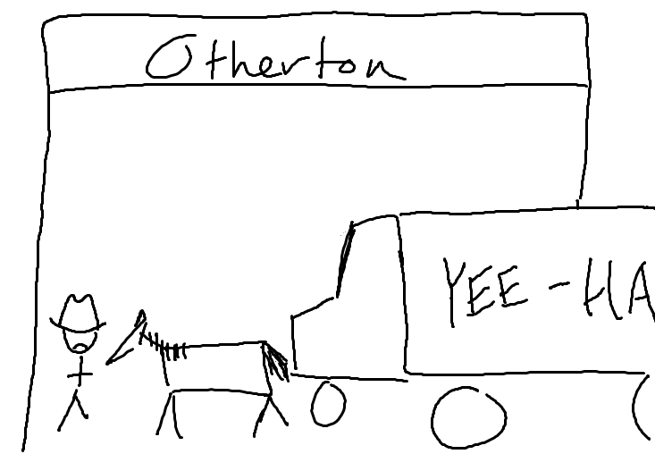
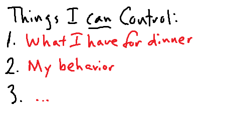

Leading as a Grunt
Finding Leadership Opportunities Wherever You Find Yourself
John Strobel | @devunit1

Welcome and Introduction
A bit about my own story
5 years at Progressive as a developer

On a project for two years
The first year was just learning
Leaders are defined by their followers

Started looking for leadership opportunities

But you can't have authority as a newbie
Through Observation, this became clear:
Authority

Authority
"The power or right to give orders, make decisions, and enforce obedience"
-- Oxford Dictionaries via Bing
More simply
Rewards for "good" behavior
Punishments for "bad" behavior
Spectrum of Authority

The drawback: I don't control authority
Leadership is more than just authority...
Influence

Influence
"The capacity to have an effect on the character, development, or behavior of someone or something, or the effect itself"
-- The Oxford Dictionary via Bing
Put more simply
Riders suggest destinations, but the horse chooses
Then why would the horse listen?
Influence can be negative
Negative influence has effects, too!

The spectrum of Influence
The drawback: I don't control influence
Well shucks

On variable control

I made a list
I made another list

I CAN CONTROL MY OWN BEHAVIORS!
Why is this guy so excited about that?
Behaviors as they Relate to Influence
Maniacal laughter would make you think I'm crazy
People adjust their own behavior to react to yours

Over time, acting like a leader grows trust and influence
... over time
I looked at my project again
Leaders become so because they act so
Behaviors, Influence, and Authority
If you demonstrate a pattern of convincing people to listen to you...
There are many paths to Authority
Leadership Behaviors - A quick caveat
Please note: these worked for me, and I'm weird

Find what works for you
Leadership Behaviors
Leadership Behaviors:
- Be Self-Aware
- Questions, asking and answering
- Be wrong (and right)
- Share your network with people - Make introductions
- Focus on solving the problem
- Always focus on helping others
Be Self-Aware

Questions - Ask them surgically
Questions - Answer them to help others
Be able to be wrong (or right) graciously

Leverage your own network for others
Focus on solving the problem, not laying blame

Always, always always help others
Questions, Discussion, or The Gift of Time
Thank you!